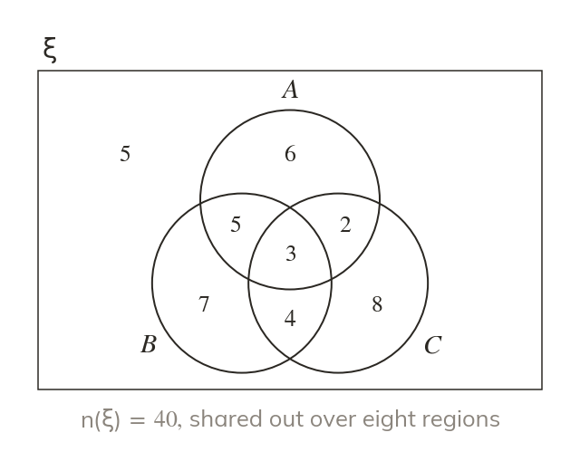
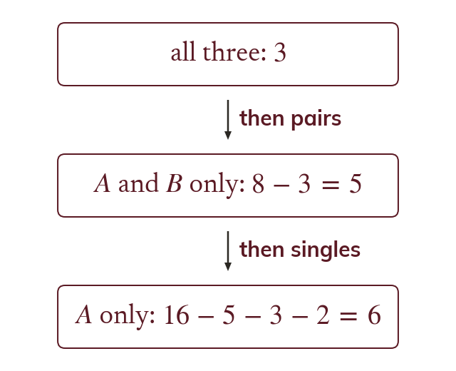
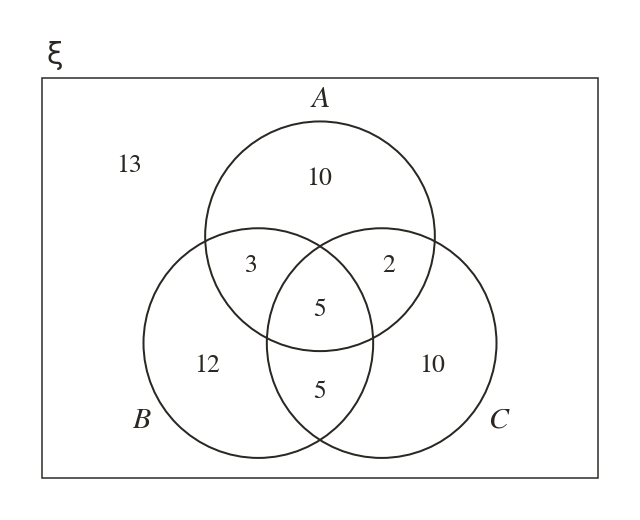
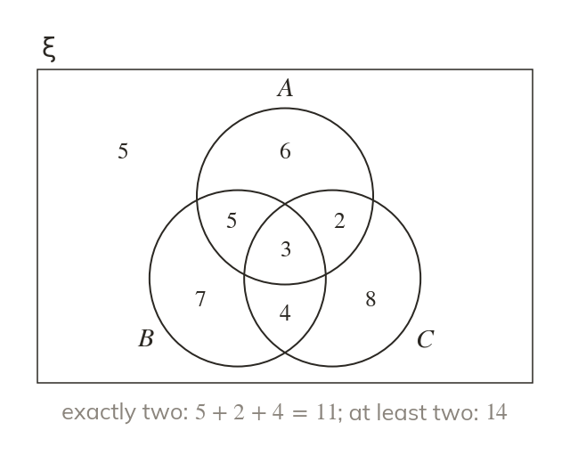
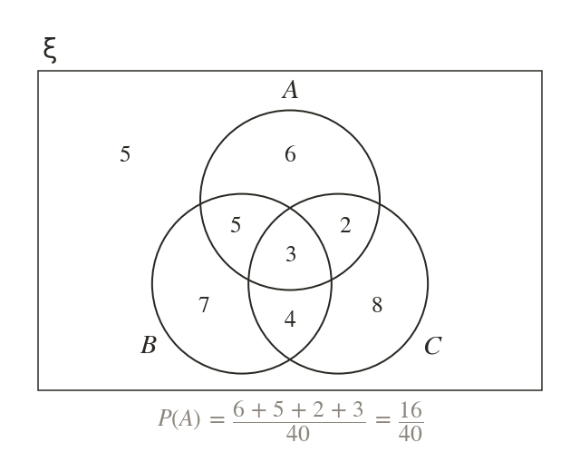
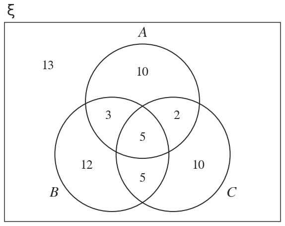

Eight regions
Three circles make eight regions, including the one outside them all. Each element sits in exactly one.
With three groups the Venn diagram has eight regions, and survey totals overlap in a tangle. Filling the diagram from the centre outwards untangles every count, and every probability follows from it.
Work down the page at your own pace. Write every answer in your book first, then click to check it.
Read each card, then follow the worked examples one step at a time.

Three circles make eight regions, including the one outside them all. Each element sits in exactly one.

Fill the centre first, then each pair, then each single region. Subtract what is already placed each time.

Pick an answer. If it's wrong, the feedback tells you which mistake it was.
Read each card, then follow the worked examples one step at a time.

'Exactly two' is the three pair regions, without the centre. 'At least two' adds the centre.

A probability adds the counts of the event's regions. The sum is divided by n(ξ).

Pick an answer. If it's wrong, the feedback tells you which mistake it was.
Finished? Next lesson: 10H.4.1 Circumference and Area of Circles.
Log in, then search for a code to practise that skill.
Videos, worksheets and more on each part of this lesson.